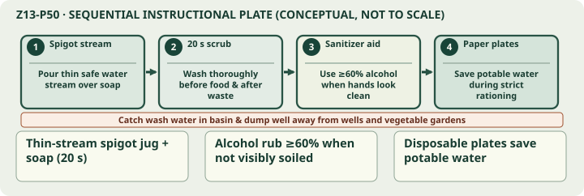

Z13-P50 · Home survival and utilities · New manuscript
Maintain water-conserving hand hygiene and dish sanitation during service cuts
Break fecal-oral illness chains inside the home using minimal stored potable water during multi-day utility disruptions.
When it applies · Homes operating on limited stored water reserves during municipal breaks, well outages, or storms.
Equipment · Spigot water jug or small pour pitcher, liquid soap, basin, ≥60% alcohol hand sanitizer, disposable paper plates/utensils, and clean towels.

Actions
- Build a simple gravity handwashing station (a small spigot jug or assisted pitcher pouring a thin stream over hands into a catch basin) so thorough 20-second soap-and-safe-water handwashing uses just ounces instead of gallons—especially before cooking and after toilet/waste tasks.[U13, F01, W29]
- Use ≥60% alcohol-based hand sanitizer to conserve water when hands are NOT visibly soiled with dirt, grease, or fecal matter (visible grime still requires soap and safe water).[U13]
- Switch to disposable paper plates, bowls, and utensils during strict water rationing to save potable water for drinking and hygiene; wash essential cooking pots with confirmed safe water and air-dry completely.[U13, W29]
Failure recognition · Skipping handwashing after using an emergency bucket toilet to "save drinking water," triggering a household norovirus outbreak during a blackout.[U13, F01]
Verify · Confirm dedicated handwashing station stocked with soap and safe water, sanitizer for clean-looking hands, and catch basin emptied away from wells/food.[U13, W29]
Stop or change course · Shared vomiting or diarrhea inside a water-rationed home escalates hygiene isolation and potential relocation to full-service care.[U13, M17]
Evidence and editorial notes
- F01 · USDA / FDA / CDC · Four Steps to Food Safety (current web edition)
- Section: Clean and Separate · Conditions: Food preparation with safe water and surfaces
Support: Wash hands and separate raw animal foods and juices from ready-to-eat food.
Limitations: Requires safe water or approved hand hygiene substitutes in outages. · Conflicting evidence: None; retained for food safety pack completeness.
Editorial note: Maintains five-pack integrity. · Specialist reviewer: Food safety and public health
Primary source · checked 2026-11-24 - M17 · NIH / MedlinePlus · Dehydration (current web edition)
- Section: Dehydration Recognition, Oral Rehydration, and Red Flags · Conditions: Heat exertion, prolonged diarrhea, vomiting, or inadequate water intake
Support: Encourage small frequent sips of safe potable water or labeled oral rehydration solution in alert patients able to swallow; evacuate urgently for confusion, inability to keep fluids down, sunken eyes, or minimal dark urine.
Limitations: Severely dehydrated or altered patients cannot safely rehydrate by mouth alone. · Conflicting evidence: None; avoids unverified homemade salt-sugar ratio guesswork when labeled packets exist.
Editorial note: Links hydration monitoring to medical evacuation triggers. · Specialist reviewer: Wilderness medicine and internal medicine
Primary source · checked 2026-11-24 - U13 · CDC · How to Make Water Safe in an Emergency (2024-09-19)
- Section: Sanitation, Hand Hygiene, and Emergency Waste Containment · Conditions: Household water-service or sewer interruption
Support: Maintain separate handwashing stations using safe water and soap (or alcohol hand rub when hands are not visibly soiled), line emergency bucket toilets with heavy bags and tight lids when sewer service is unusable, and never mix bleach with ammonia or acids.
Limitations: Improvised sanitation is a temporary containment bridge until municipal sewer or licensed sanitation resumes; follow local health department disposal orders. · Conflicting evidence: None; prevents fecal-oral outbreaks and toxic chloramine gas mixing.
Editorial note: Core household sanitation and chemical-mixing boundary in Z13. · Specialist reviewer: Environmental health and sanitation specialist
Primary source · checked 2026-11-24 - W29 · CDC · How to Make Water Safe in an Emergency (2024-09-19)
- Section: Boil > Safe Water for Infants, Wounds, and Hygiene · Conditions: Emergency hygiene, wound rinsing, and infant formula preparation under water advisories
Support: Use confirmed potable or properly boiled-and-cooled water for brushing teeth, washing produce, cleaning wounds, and mixing infant formula; avoid untreated water for food-contact utensils.
Limitations: Do-not-use advisories may also prohibit skin contact or bathing depending on contaminant. · Conflicting evidence: None; extends drinking safety to hygiene and preparation boundaries.
Editorial note: Separates potable-required tasks from non-potable utility uses. · Specialist reviewer: Public health and wilderness medicine
Primary source · checked 2026-11-24
Source lineage · CDC Safe Water and USDA Food Safety; new manuscript · Classification · New manuscript.